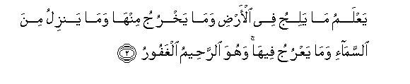
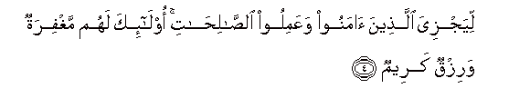
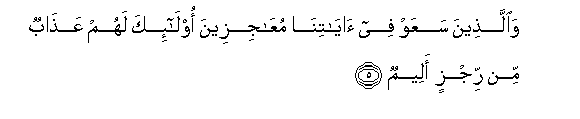
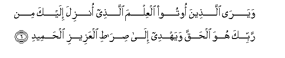
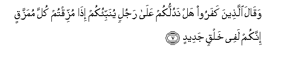
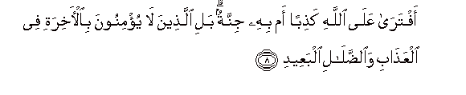
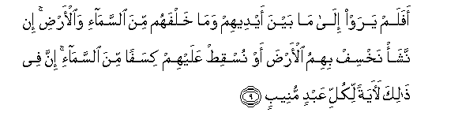

Sacred Texts Islam Index
Hypertext Qur'an Unicode Palmer Pickthall Yusuf Ali English Rodwell
Sūra XXXIV.: Sabā, or the City of Sabā Index
Previous Next

The Holy Quran, tr. by Yusuf Ali, [1934], at sacred-texts.com
Sūra XXXIV.: Sabā, or the City of Sabā
Section 1
1. Alhamdu lillahi allathee lahu ma fee alssamawati wama fee al-ardi walahu alhamdu fee al-akhirati wahuwa alhakeemu alkhabeeru
1. Praise be to God,
To Whom belong all things
In the heavens and on earth:
To Him be Praise
In the Hereafter:
And He is Full of Wisdom,
Acquainted with all things.

2. YaAAlamu ma yaliju fee al-ardi wama yakhruju minha wama yanzilu mina alssama-i wama yaAAruju feeha wahuwa alrraheemu alghafooru
2. He knows all that goes
Into the earth, and all that
Comes out thereof; all that
Comes down from the sky
And all that ascends thereto
And He is the Most Merciful,
The Oft-Forgiving.
3. Waqala allatheena kafaroo la ta/teena alssaAAatu qul bala warabbee lata/tiyannakum AAalimi alghaybi la yaAAzubu AAanhu mithqalu tharratin fee alssamawati wala fee al-ardi wala asgharu min thalika wala akbaru illa fee kitabin mubeenin
3. The Unbelievers say,
"Never to us will come
The Hour": say, "Nay!
But most surely,
By my Lord, it will come
Upon you;—by Him
Who knows the unseen,—
From Whom is not hidden
The least little atom
In the Heavens or on earth:
Nor is there anything less
Than that, or greater, but
Is in the Record Perspicuous:

4. Liyajziya allatheena amanoo waAAamiloo alssalihati ola-ika lahum maghfiratun warizqun kareemun
4. That He may reward
Those who believe and work
Deeds of righteousness: for such
Is Forgiveness and a Sustenance
Most Generous."

5. Waallatheena saAAaw fee ayatina muAAajizeena ola-ika lahum AAathabun min rijzin aleemin
5. But those who strive
Against Our Signs, to frustrate
Them,—for such will be
A Penalty,—a Punishment
Most humiliating.

6. Wayara allatheena ootoo alAAilma allathee onzila ilayka min rabbika huwa alhaqqa wayahdee ila sirati alAAazeezi alhameedi
6. And those to whom
Knowledge has come see
That the (Revelation) sent down
To thee from thy Lord—
That is the Truth,
And that it guides
To the Path of the Exalted
(In Might), Worthy
Of all praise.

7. Waqala allatheena kafaroo hal nadullukum AAala rajulin yunabbi-okum itha muzziqtum kulla mumazzaqin innakum lafee khalqin jadeedin
7. The Unbelievers say
(In ridicule): "Shall we
Point out to you a man
That will tell you,
When ye are all scattered
To pieces in disintegration,
That ye shall (then be
Raised) in a New Creation?

8. Aftara AAala Allahi kathiban am bihi jinnatun bali allatheena la yu/minoona bial-akhirati fee alAAathabi waalddalali albaAAeedi
8. "Has he invented a falsehood
Against God, or has
A spirit (seized) him?"—
Nay, it is those who
Believe not in the Hereafter,
That are in (real) Penalty,
And in farthest Error.

9. Afalam yaraw ila ma bayna aydeehim wama khalfahum mina alssama-i waal-ardi in nasha/ nakhsif bihimu al-arda aw nusqit AAalayhim kisafan mina alssama-i inna fee thalika laayatan likulli AAabdin muneebin
9. See they not what is
Before them and behind them,
Of the sky and the earth
If We wished, We could
Cause the earth to swallow
Them up, or cause a piece
Of the sky to fall upon them.
Verily in this is a Sign
For every devotee that
Turns to God (in repentance).